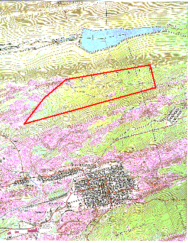

The Natalie East site has been expanded to 620+- acres.
LOCATION
DIMENSIONS
ELEVATION
ACCESS
OWNERSHIP
USE
SITE CONCERNS
WATER
GAS
STEAM
ELECTRIC
NOTES:
1. Per 'Brush Valley Regional Chamber of Commerce', The
'Federal Bureau of Prisons' will not build on heavily scarred or
undermined ground.
2. Consider Schuylkill County, our neighbor with similar
terrain conditions, their valleys have state parks and their
mountain tops have prisons.
Information was obtained from the following data sources:
U.S. Geological Survey 7.5 minute Topographic Maps.
This site consists of 620+- acres of undeveloped land
located in Mount Carmel Township in the northeast end of
Northumberland County and an eastern portion of the site in
Conyngham Township in western Columbia County. The site is about
1.5 miles east of the village of Natalie.
Averages are 10,000 feet east to west, and 2400 feet north to south.
Site ranges from 1500 to 1800 feet above msl. Most of site is within a range from 1600 to 1700 feet above msl.
Route 54 at south edge of Natalie to site via present dirt road. Additional access could be provided from
route 42 near Aristes to site.

Proposed site acreage is owned by Roaring Creek Division of Consumers Water Company. Additional acreage with
adjacent properties that may be available are owned by:
Roaring Creek Water
Burnrite Coal Company
Susquehanna Coal Company
'Right of Entry' forms have been signed for two of the three
ownership firms involved. This means that owners would consider
negotiations for sale of portions of subject properties. Signing
of third form is pending.
Currently all site properties are undeveloped land with
some surface mining and some deep mining. Some mine reclamation
has been done. A large portion of site area is free of surface
mining, deep mining, and feasible recoverable coal deposits.
We with BVPA believe that site concerns relating
to coal within and adjacent to this site can feasibly be eliminated.
1. Remaining coal deposits are not of sufficient quality or
quantity to justify economical recovery.
2. Remnants of surface mining can easily be reclaimed.
3. Remnants of deep mining are few and problems can be overcome.
4. A portion of site under coal lease can be negotiated for
availability.
Near 8000 feet from water main near Natalie.
Natural, four inch, medium pressure (30-60psi) line at
Foster Wheeler Co-Gen Plant. About two miles from site.
Foster Wheeler Mount Carmel Inc. can supply a significant volume of steam available at any
usable pressure or temperature for a distance of two to three miles.
Foster Wheeler Mount Carmel Inc. can provide electric power beginning in September of 2010.
This 'Natalie East Site' cannot in any manner be considered
as heavily scarred, and large areas of this site are not undermined.
Possibly no deep mining in site area.
U.S. Geological Survey Coal Investigations Maps.
U.S. Office of Surface Mining-Wilkes-Barre.
Dept. of Environmental Protection - Bureau of Abandoned Mine Reclamation. (Northumberland abandoned mine land
problem report).
Northumberland County Engineering Office.
Northumberland County Assessor's Office.